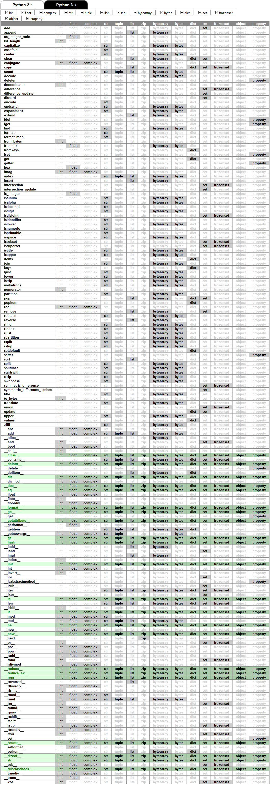
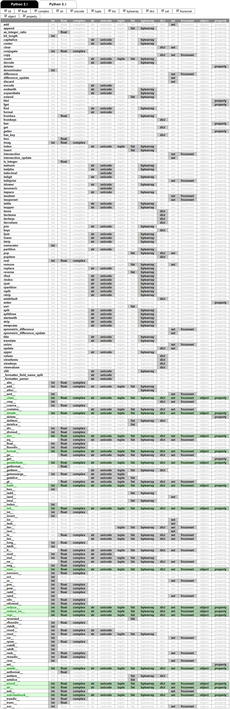

Справочник по методам ключевых типов данных ключевых типов данных Python 2 и 3. Изначально, он создавался для того, чтобы заглядывать в него при использовании утиной типизации, но теперь я просто люблю его почитать. Из него можно узнать, что 3.14159265.hex() равно '0x1.921fb53c8d4f1p+1', что существует полезности на редкие случаи типа swapcase, экзотические рудименты типа viewitems, или нововведения типа __isabstractmethod__… Думаю, что пару раз просмотреть эту таблицу и поиграться флажками будет интересно любому Python-разработчику, и даже самые искушённые смогут найти для себя пару интересных вещей и поводов заглянуть в документацию и поэкспериментировать в консоли.
Таблица для Python 3.x:

Таблица для Python 2.x:
